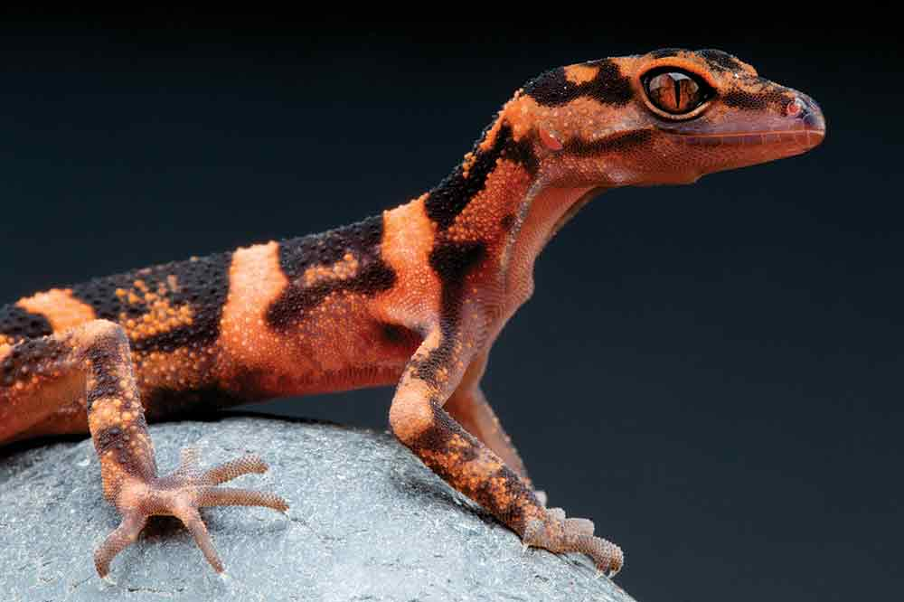

Gecko Appreciation
Fascinating Gecko Facts

Sticky Toes and More
Geckos’ adhesive toes are one of nature’s engineering marvels. Their toes are covered with microscopic hairs called setae, each of which branches out into even smaller structures that interact with surfaces at a molecular level. This allows geckos to scale vertical walls and even hang upside down. Scientists have studied this ability to develop bio-inspired adhesives and climbing robots. The gecko’s foot structure continues to amaze researchers around the world. As you can see, we have learned quite alot from our tiny friends.
Incredible Defenses
Geckos have some clever ways of avoiding predators. In addition to dropping their tails, they can also blend into their surroundings with camouflaging skin. Some species even make loud hissing or clicking sounds to startle attackers. Their soft, flexible bodies allow them to hide in small crevices where predators can't reach. These adaptive traits make them successful survivors in a variety of ecosystems. With this many natural abilites, it is no wounder how they have been found all around the world.
And More Fun Facts!
- Geckos clean their eyes with their tongues.
- Some species lay only one or two eggs at a time.
- They can regenerate their tails multiple times.
- Many geckos lack eyelids but have excellent night vision.
The Gecko Legacy
With their unique adaptations and impressive survival strategies, geckos have become a subject of interest for scientists and nature lovers alike. These amazing reptiles play an important role in maintaining the ecological balance by keeping insect populations in check. Their physical features and behaviors continue to inspire innovations in science and technology. Geckos truly show us that even the smallest creatures can have a big impact on our world.
For deeper insights, visit Britannica and Animal Diversity Web.